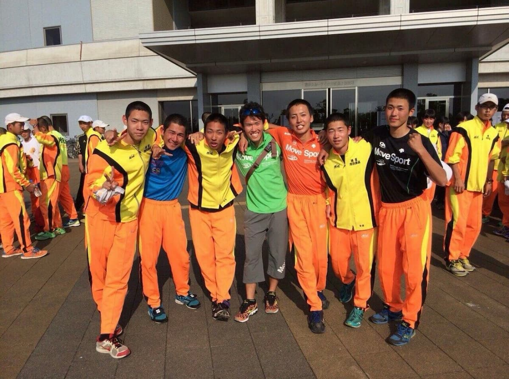
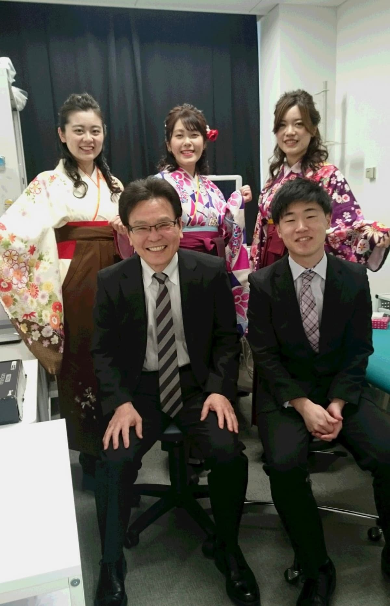
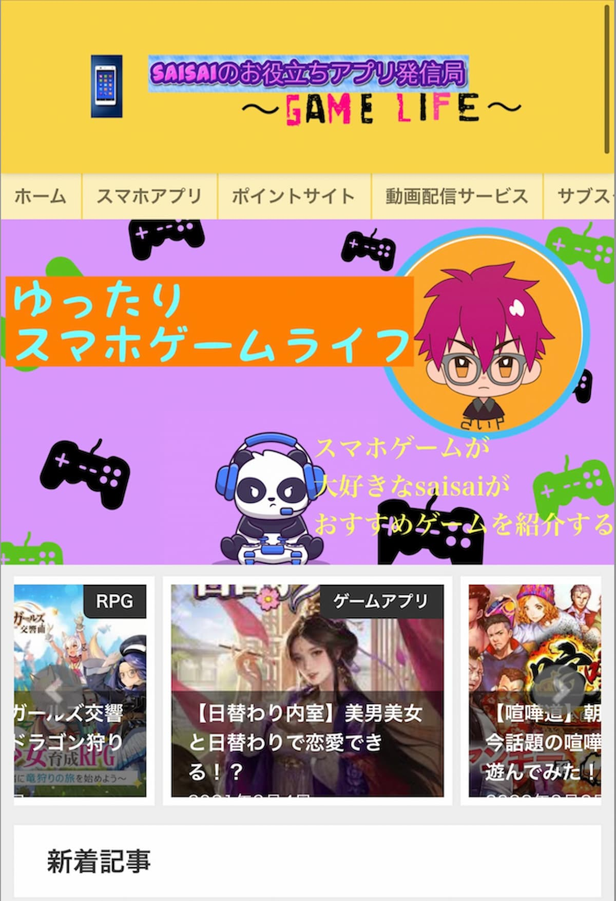

3年目に 関東大会出場
僕にとって、高校3年間の青春は陸上でした。400mは最後の100mが一番苦しくて、「もう走れない」と何度も思う競技です。1、2年生は県大会止まり。それでも走り続けた3年生の県大会で6位に入り、関東大会の切符を掴みました。
49秒97400m 自己ベスト
STRENGTH 継続力

私がこれまで歩んできた転機と、これからの未来です。STEPを押すと、その時期の話が開きます。
僕にとって、高校3年間の青春は陸上でした。400mは最後の100mが一番苦しくて、「もう走れない」と何度も思う競技です。1、2年生は県大会止まり。それでも走り続けた3年生の県大会で6位に入り、関東大会の切符を掴みました。
49秒97400m 自己ベスト
STRENGTH 継続力

きっかけは、高校生のときに見た『医龍』でした。一人の患者さんを助けるために、医師も看護師も臨床工学技士も動く。あの姿に感動して、杏林大学へ進学しました。実習で心が折れそうなときもありましたが、4年間続けられたのは、あのときの気持ちを大事にしていたからです。
STRENGTH 責任感

臨床工学技士として、透析の現場に約4年半在籍しました。患者数は40名。1人あたり10名を受け持って回していました。装置の操作や判断ひとつが患者さんの命に直結するプレッシャーが毎日ありましたが、その経験から、チームで働く重要性と仕事への責任感を培うことができました。
40名担当患者数（1人あたり10名を受け持ち）
STRENGTH 責任感
コロナ禍に副業で始めたゲーム系のアフィリエイトで独立しました。最初の1年は、ほぼ収入なし。アクセス数と成約率を見て、どこを直せば数字が動くかを考える。それが面白くて、気づけば時間を忘れるぐらい夢中になっていました。
0円 → 100万円月間収益（1年目 → 2年目以降）
STRENGTH 改善力

アフィリエイトのあと、もう一度透析の現場に戻って2年働きました。それでも、数字を見て改善していたあの時間が頭から離れず、もっと大きな課題に組織で向き合いたいと思うように。未経験ですが、年齢を理由に諦めませんでした。
いま立っているのは、1周を走り終えた場所ではなく、次のスタート地点だと思っています。何歳からでも新しい挑戦ができることを、これから自分の仕事で証明していきます。